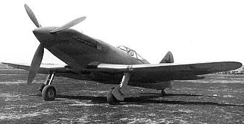

Четыре воздушных тарана
Борис Ковзан – единственный в мире летчик-истребитель, совершивший четыре воздушных тарана и оставшийся в живых. Каждый из этих подвигов является свидетельством его невероятного мужества, хладнокровия и летного мастерства.
Первый таран: 29 октября 1941 года
В районе города Зарайска Московской области, сопровождая штурмовики на истребителе МиГ-3 (по другим данным, Як-1), Борис Ковзан вступил в бой с немецким истребителем-бомбардировщиком "Мессершмитт-110" (или "Мессершмитт Bf.100"). Израсходовав в бою все боеприпасы, он принял решение таранить. Винтом своего самолета Ковзан отсек хвостовое оперение вражеской машины, после чего "Мессершмитт" рухнул на землю. Сам Ковзан сумел благополучно посадить свой поврежденный самолет на аэродром. По некоторым сведениям, винт его самолета был отремонтирован местным кузнецом.
Второй таран: 21 (или 22) февраля 1942 года
В районе Вышнего Волочка (между Вышним Волочком и Торжком), прикрывая шоссе Москва – Ленинград на истребителе Як-1, Ковзан атаковал немецкий бомбардировщик "Юнкерс-88". В ходе боя он пошел на таран. Его самолет на некоторое время увяз в фюзеляже "Юнкерса", но затем Ковзану удалось освободить свою машину и совершить жесткую, но в целом удачную посадку.
Третий таран: 9 июля (или 7, 11 июля) 1942 года
В бою под Новгородом, в районе станции Любница, на самолете Як-1 (по другим данным, МиГ-3, но вероятнее Як-1), Борис Ковзан, спасая товарища, вступил в бой с двумя истребителями "Мессершмитт-109". Одного из них он таранил, ударив плоскостью своей машины. Немецкий самолет разбился, а Ковзан смог посадить свой поврежденный истребитель.
Четвертый таран: 13 августа 1942 года
Это был самый драматичный из всех таранов. В районе Старой Руссы Новгородской области, возвращаясь с боевого задания на истребителе Ла-5 и уже израсходовав боекомплект, капитан Ковзан был атакован группой немецких истребителей "Мессершмитт-109". В неравном бою его самолет был подбит и загорелся, а сам Ковзан получил тяжелое ранение в голову – пуля выбила правый глаз. Теряя сознание и понимая, что шансов уйти нет, он направил свой горящий Ла-5 в лобовую атаку на один из "Мессершмиттов". От мощнейшего удара оба самолета разлетелись на куски. Бориса Ковзана без сознания выбросило из кабины. С не полностью раскрывшимся парашютом он упал в болото на оккупированной территории. Его нашли и спасли местные жители, которые затем передали его партизанам.